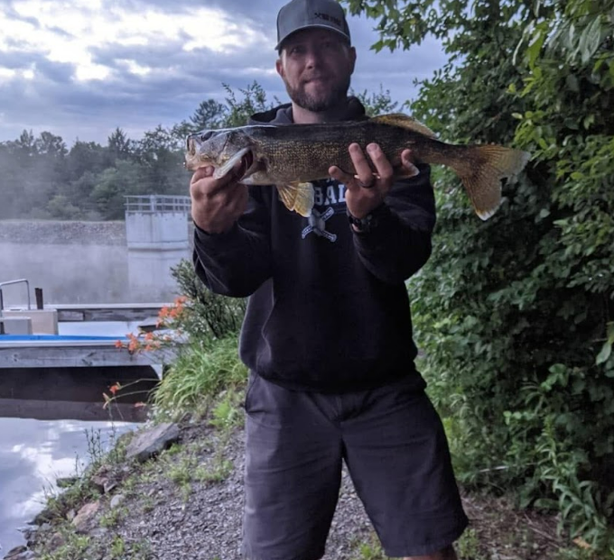
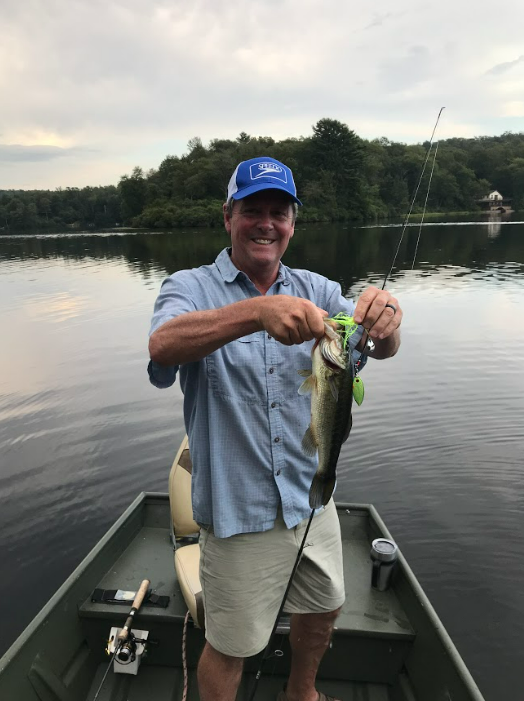
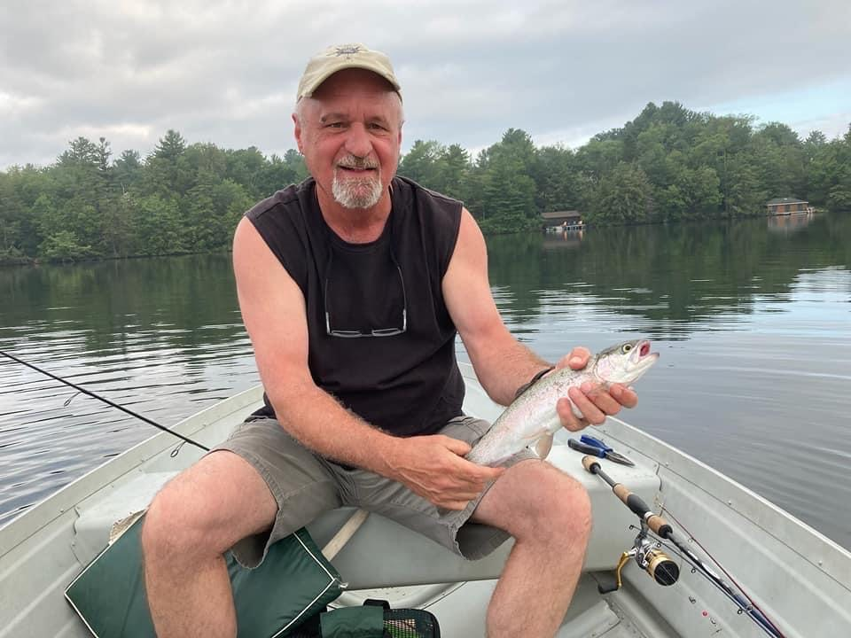

Seasons
Though fishing is considered a summer activity, it can be enjoyed
throughout the year. Ice fishing is fun in the winter, fall and spring
are often the best times to catch fish, and fishing in summer is
amazing too.
Winter
Firstly, when you go fishing in the winter, you need to stay warm.
Check the weather and dress appropriately. Overdressing is always
better than underdressing so wear layers and bring a hat and
gloves. Also, when ice fishing, make sure that the ice is thick
enough to stand on safely. 4 inches is considered safe but always
be cautious. Fish are trying to stay warm as well. So, fish are
very inactive. Their metabolisms slow down and they go to the deep
portions of the lake and try to stay warm. So, going to the middle
of the lake where there is structure, such as rocks or sticks. For
example, straight out from blueberry point would be good because
it is deep and there is structure. Because the fish are inactive,
slow retrieves and lures with little action will work best.
However, fish want lots of food while expending little energy so
decent-sized lures are recommended. Jigs, rapalas, and spoons work
very well. Clearer water in winter means fish can see through some
lures so live bait can work very well in the winter. To get to the
fish, use an ice drill to make a hole in the ice then drop a lure
through the ice and jig. There are setups to have multiple rods
fishing but that is more advanced and will require further
research if you are interested.

Spring
Fish don't eat much during the winter so to fatten up, they eat a
lot during the spring. This is called the spring bite. The fish
also spawn in the spring. For bass, the first step in the spawning
process is staging, where bass wait in deeper water where they are
in winter near shallow water where they will spawn. Fishing in
deeper water off of the cove where Conklin Run flows into the lake
is a great spot. You need lures to sink to the bottom where the
fish are. Using jerkbaits and crankbaits that dive to the bottom.
Allowing spinnerbaits and softer plastics to sink before reeling
them in are also very effective. As they enter the spawning phase,
bass become very territorial, so they will eat almost anything.
This can be the best time to fish as you will experience the most
action. While plastics do work, using spinnerbaits are very
effective because of how aggressive the fish are. Almost anywhere
along the coast will work at this time. Post-spawn, fish slow down
their eating a little bit, which can be difficult to fish, but
using smaller lures with less action should work. For other fish,
such as crappie, perch, and bluegill, any small jig will work. In
early spring, fish will be deep and move shallower as the water
warms. Spring can be the most fun time to fish because catching 5
bass within a few hours is not uncommon so make sure to try
fishing next spring.
Summer
Summer is when the lake is busiest and most people are fishing. The lake gets very hot and weedy. Most bass move into deeper water around ten feet deep. Fish can become lethargic in the heat so softer lures, my favorite being senkos, will work best. Fishing at sunrise and sunset is a strategy to overcome the heat because the water is cooler at these times. Small jigs with tails work very well for panfish. Deep lily-pads provide structure and cooler water at the bottom. Allowing your lure to sink when fishing in deeper waters ensures the fish will see it. There is still fish in shallow water though. Casting into shade such as docks and trees or fishing where cool water enters the lake works very well. At this time of the year, fish can be found almost anywhere but underneath the big dock is a popular spot for crappie, just beware of swimmers. For bass, the lily pads near the castle are a great spot. Perch and walleye can be found by trolling out deep. Using live bait works well for catfish that are attracted to the smell and can work for all fish. Summer is when most people have time to fish and almost anything will work with persistence so find what works for you. If it gets too hot, the fish will almost completely stop eating and you’ll have time to enjoy other lake activities. All in all, this is a great time to fish Lake Mokoma, especially if you can overcome the heat.

Fall
In fall, the water cools down and the fish have to fatten up for winter. This means aggressive eating and great fishing. I find that softer plastics that work during the summer months don’t work as well as lures that flash and vibrate, such as spinnerbaits and crankbaits, especially for bass. Using surface lures can be very fun at this time of year and you could catch something. For smaller fish, jigs that have action and bigger tails will work very well. As it cools off from the summer, fish can be found throughout the lake so looking for structures such as stumps and lily-pads will work well. My personal favorite is fishing the east shore from the top of the lake down to the public floating docks. Once it gets cool, fishing during the day when the sun warms the water will work better than mornings and evenings. At this time, bass will be in shallow areas hunting and staying warm. Eventually, fall will turn into winter and fish will move into deeper water. The bite will slow and moving back to softer lures is recommended until the lake eventually freezes and it is officially winter.
Time of Day
Time of day mostly depends on the weather and the season. First of
all, the best time to go fishing is when you have time to. But,
with the option, sunrise or sunset are great for fishing. The
water will either be just warming up or just cooling down which
usually energizes the fish causing them to eat. When it’s colder,
fishing in midday should produce results but in the summer,
fishing at midday will require looking for shade or cooler water.
It is possible to fish at night as long as you can bring a light
and a lure with a lot of vibration and flash so the fish will
notice it. Another strategy for finding good fishing times is the
lunar calendar. When the moon is directly overhead or directly
underfoot, all animals tend to be more active so fish will be
eating at this time. I have noticed more success during these
allotted times but I don’t seek them out. Find more information
here.

Weather
A lot of fishing in the weather depends on what you want to do. Fishing can be very enjoyable when it is 80 degrees and sunny, but you might not catch much. When it comes to catching fish, mild temperatures are the best. Not too hot and not too cold is when fish are the most active. Unsettled wind and pressure changes will oftentimes spook fish. For example, when the wind blows from the dam, I find it difficult to catch anything. However, fish can sense a storm coming and sometimes there will be a bite just before it hits. Rain during the hot summer months provides the fish with cool, oxygen-rich water, so that can be a great time to fish. Wind is good because it makes it difficult for the fish to see the fisherman. In general, the lure you choose should match the color of the bottom, but contrasting the color of the sky is also recommended. For example, on cloudy days, use a color like chartreuse or purple, both of which I find work really well. On really sunny and hot days, use more subtle lures and seek out shade, deep water, or a cool stream flowing into the lake. When it gets really cold, dress appropriately and look for deep water that should be slightly warmer. In general, when it’s overly hot or cold and when the weather is unsettled, the fishing will be more difficult. However, fishing is possible in any weather and is always more enjoyable when you, the fisherman, is comfortable.